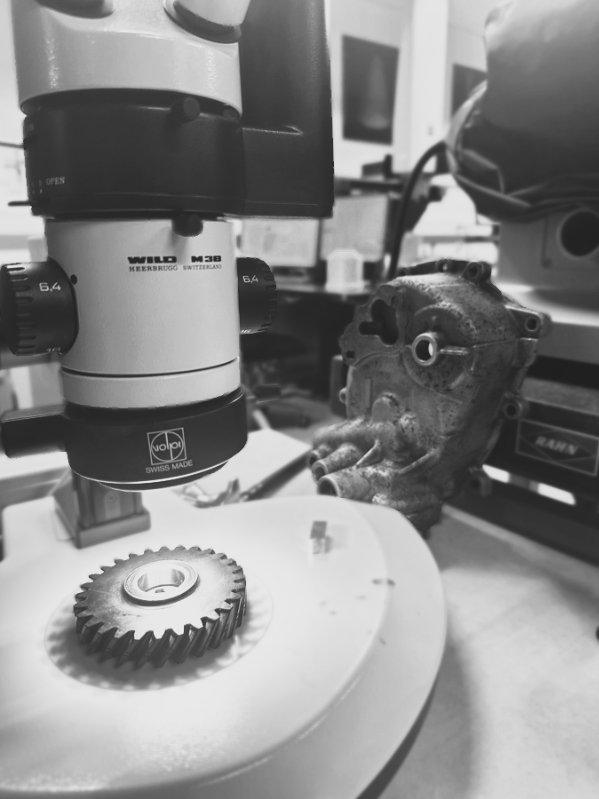
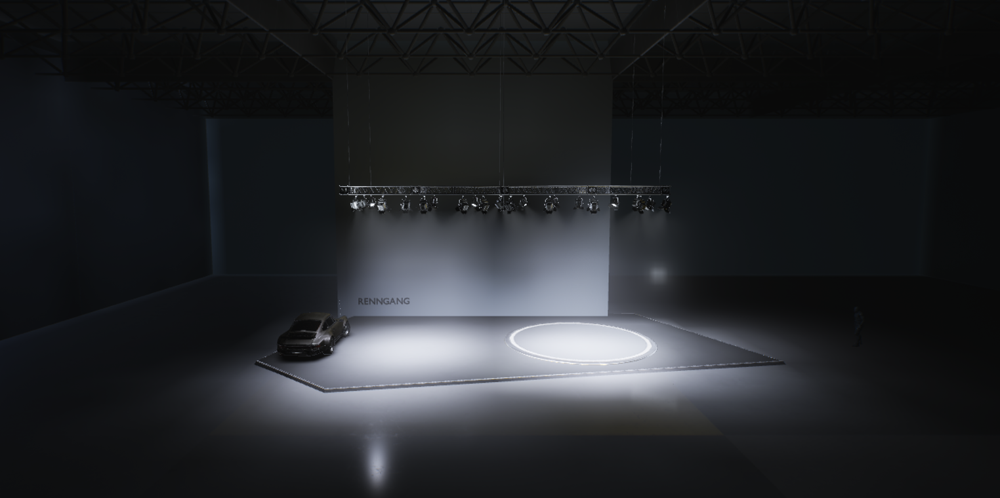

The Renngang klan
In the heart of the automotive Welt, a new Kraft has emerged to dominate the realm of Porsche transmission rebuilding and engine servicing.

They delve deep into the Wissenschaft of materials engineering, offering profound insights into the metallurgical Zusammensetzung of Porsche components. From the lightweight Aluminium to the robust Stahl of the Fahrwerk, Renngang educates Porsche Liebhaber on maintaining the Integrität of their cherished Fahrzeuge. Embracing modern Technologie, Renngang generously shares CAD-Dateien for specialized Werkzeuge, empowering the Gemeinschaft to fabricate precise instruments essential for Porsche Wartung. Their vision extends into the virtuelle Realität, developing immersive software to revolutionize the understanding of Porsche Anatomie. As Renngang's influence expands über die Grenzen, they are not merely participating in the automotive Landschaft—they are redefining it. Through Bildung, Innovation, and a relentless pursuit of Perfektion, Renngang is setting new Maßstäbe in Porsche transmission and engine excellence.
